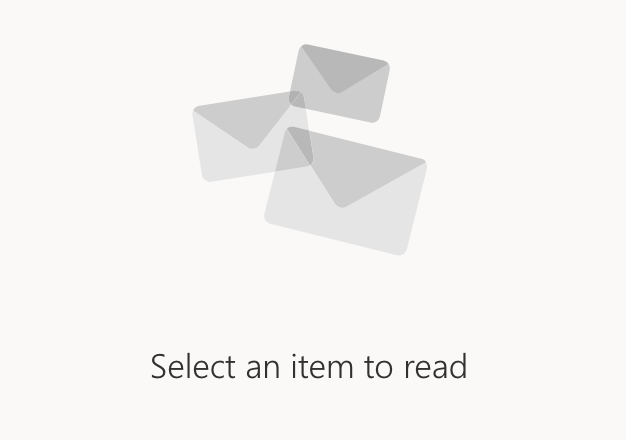

<ng-container
  *ngIf="this.shared.getState(); then notnulll; else nulll">
</ng-container>
<ng-template #notnulll>
        <mat-list-item *ngFor="let dataMock of dataDetail;let i = index">
            <div *ngIf="this.shared.getState()-1 == i" style="padding: 10%" id="dataId">
                <mat-icon matLineIcon style="display: inline">folder</mat-icon>
                <h4 matLine> {{dataMock.from.email}} </h4>
                    <h2 matLine> {{dataMock.subject}} </h2>
                    <br>
                    <span>{{dataMock.body}} </span>
            </div>
          </mat-list-item>
  </ng-template>
  <ng-template #nulll >
          <div class="center">
        
</div>
</ng-template>
